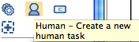
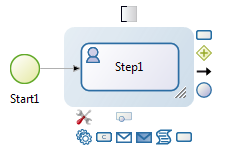

Add a task
(Category: Process Modeling)
There are two ways to create new tasks in a process.
- by drag and drop from the Design palette to create a
brand new task, for example a human task:

- by drag and drop from the Context palette of an
existing element:
